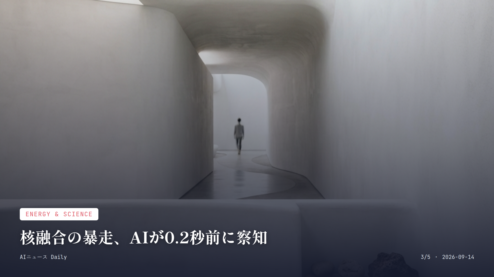

これは2026-09-14時点のアーカイブページです。最新のニュースはこちら
本サイトはアフィリエイトプログラムによる収益を得ている場合があります。
本サイトはGoogle AdSense等の広告配信サービスを利用しています。
約1分で読める
スマホの通知、AIが先回りしたら？
LINEヤフーのAgent iが値下がりやイベントを自動通知
LINEヤフーが2026年9月11日に発表したのは、AIエージェント「Agent i」の新機能。登録したキーワードにまつわる最新情報や商品の値下がり、イベント情報なんかを自分で探しに行って、こっちが聞く前に通知までしてくれる「タスク機能」だ。同社はこれを「動くAI」と呼んでいる。
ここ数週間で公開されたプロトタイプを見てみると、目覚ましやスクリーンショット管理、カレンダー、ペットライフなど、生活にべったり寄り添う8種のエージェントが並ぶ。10月までには累計40エージェントまで増やす計画だそうだ。
「聞かれたら答える」AIから、「頼まなくても裏で追いかけてくれる」AIへ。値下げ情報やちょっと気になるニュースを、自分でわざわざ調べに行く手間がこれから減っていきそうな予感がする。
なぜ重要か
LINEやYahoo!を毎日使う数千万人規模のユーザーに直接影響する機能で、日本発のAIエージェントが「受け身のチャットボット」から「先回りして動くAI」へ進化する転換点になりそうだから。
出典：日本経済新聞、ケータイWatch（2026年9月11日）
Enterprise AI
約2分で読める
職場に増えるAI社員、名前まで登場
Salesforceが7種の業務特化型AIエージェントを投入
Salesforceが2026年9月11日に発表したのは、営業・サポート・商取引・IT/人事・サプライチェーン・顧客体験など、業務ごとにきっちり役割分担された7種類のAIエージェント。「Casey」「Paige」「Carter」「Hunter」「Marshall」「Piper」「Fin」と、それぞれちゃんと名前まで付いている。
これらは既存のCustomer 360データ基盤の上で動き、企業がすでに持っている業務ルールや権限、セキュリティ設定はそのまま生かす設計だ。導入企業ではAgentforceとSlackを通じて数十億件規模の「エージェント作業単位」がすでにこなされていて、顧客対応の自律解決率もかなり高い水準に達しているという。
自社でゼロからAIエージェントを組み上げなくても、既製の「役割別AI社員」を選んで導入すればいい時代になった。パイロット導入から本番運用までの距離が、ぐっと縮まったということだ。
なぜ重要か
多くの企業が「AI導入の効果が見えにくい」と悩む中、業務ごとに役割の決まった既製エージェントの登場は導入のハードルを下げ、コールセンターや営業事務など身近な仕事の現場を直接変えそうだから。
出典：AI Agent Store News（2026年9月11日）

Energy & Science
約1分で読める
核融合の暴走、AIが0.2秒前に察知
米プリンストン研究所がプラズマ異常の予測制御に成功
米プリンストンプラズマ物理研究所（PPPL）が9月2日に発表したのは、核融合実験装置「DIII-D」で起きる「ティアリングモード」というプラズマの不安定現象を、AIが予測し装置を制御して回避したという成果だ。異常が起きる約0.2秒前に、その予兆をつかんでいたという。
ティアリングモードが起きるとプラズマ内部の熱が外に逃げやすくなり、核融合維持に必要な高温が保てなくなる。悪化すれば装置を傷めることさえある。制御システム「PACMAN」は温度・密度・磁場などの測定値を取り込み、データ取得から指令を出すまでをわずか約20ミリ秒というスピードで繰り返している。
あらゆる異常に対応できると証明されたわけではないが、人間の反応速度を軽く超えるこの制御は、実用的な核融合発電炉に向けた大きな一歩と言っていい。
なぜ重要か
核融合発電はCO2を出さないクリーンエネルギーとして期待されつつも、プラズマの不安定性制御が長年の壁だった。AIによるミリ秒単位のリアルタイム制御は、将来の電気料金や脱炭素社会にも関わる基礎技術だから。
出典：CNET Japan／Yahoo!ニュース（2026年9月）
Infrastructure
約1分で読める
ChatGPT、裏側で何が起きている？
10億人利用へ、秒間2200万件処理の基盤に刷新
OpenAIが明かしたのは、10億人規模のChatGPTユーザーと秒間2,200万件のリクエストを支えるため、もともと社内のPythonライブラリだった「Habitat」を、グローバルに分散されたストレージプラットフォームへ丸ごと作り替えたという話だ。
膨大なトラフィックに耐えるためのインフラ刷新で、利用者が急増する中でもサービスの安定性や応答速度を保とうという狙いがあるとみられる。
なぜ重要か
普段ChatGPTを使う人には見えない裏側の話だが、利用者が増えるほど混雑や遅延は起きやすくなるもの。こうした基盤強化はアプリの「重い」「つながらない」を減らすことに直結するから。
出典：AI-News blog／OpenAI News（2026年9月12日）
AI Research
約1分で読める
「知能爆発は来ない」元DeepMind幹部が反論
自己改善は進むが急激な爆発は起きないとの見解
Google DeepMindで研究責任者を務めていたOriol Vinyals氏は、AIシステムが時間をかけて自らを改善していくこと自体は予想しつつも、突然「知能爆発」が起きるという見方には懐疑的な立場をとっている。
同氏はAIによる研究開発の加速を10倍以上とみる一方、優れたアイデアを生む「リサーチセンス」と、その結果を確実に評価する仕組みという二つのボトルネックが立ちはだかると指摘する。AlphaStarやAlphaCode、Geminiを手がけてきた本人は、Jeff Dean氏らと共に科学研究プロセスの自動化を目指す新会社「Discovery Loop」も立ち上げている。
AI業界の内部でも意見が割れる中、これだけの実績を持つ研究者から出た「爆発的進化はない」という見立ては、過熱気味なAGI論争に冷や水を一杯かける形になった。
なぜ重要か
「AIが急激に賢くなり人間を超える」という不安が広がる中、AlphaStarやGeminiを手がけた業界トップクラスの研究者自身が慎重な見方を示したことは、AGIをめぐる議論のバランスを取る材料になるから。
出典：The Decoder（2026年9月12日）
Smart Home
Smart Home
約1分で読める
Alexa+、世界に広がるも日本はまだ
アジア太平洋初のオーストラリア開始、日本は蚊帳の外
Amazonの生成AI搭載アシスタント「Alexa+」は、2026年9月2日時点ですでに11カ国で使えるようになっている一方、日本ではまだお預け状態が続いている。直近ではアジア太平洋地域で初となるオーストラリアでの提供が8月6日にスタートした。
アマゾンジャパンは2026年2月の発表会で提供時期について明言を避けつつも、「米国・カナダについで優先度が高く、かなり議論をしている」とコメントしていた。対応チップを積んだEchoシリーズはすでに日本でも売られていて、ハード面の準備自体は整っている。
なぜ重要か
国内で数百万台規模が普及しているとみられるEchoシリーズのユーザーにとって、いつ生成AI版アシスタントが使えるようになるかは、日々の暮らしの利便性に直結する関心事だから。
出典：スーログ（2026年9月2日時点）
PC & Gaming
PC & Gaming
約1分で読める
PC単体で動くAI、NVIDIAが後押し
RTX GPU向けにローカルAIエージェントの最適化を発表
NVIDIAが2026年9月3日、ドイツの家電見本市「IFA 2026」に合わせて打ち出したのは、RTX GPU向けのローカルAIエージェント関連の発表だ。クリエイターや開発者が使うAI推論エンジン「llama.cpp」と「vLLM」、それぞれの推論性能を底上げするカーネル最適化が紹介されている。
クラウドのAIサービスに頼らず、手元のパソコンだけでAIエージェントを動かす流れが、ゲーミングPCやクリエイター向けPCの分野でも広がりつつある。
なぜ重要か
クラウド型AIは通信環境や利用料に左右されがちだが、自分のPCだけで動くローカルAIが実用レベルに近づけば、プライバシーを守りながら無料かつオフラインでAIを使う選択肢が広がるから。
出典：YAYAFA（2026年9月12日）
先頭に戻る